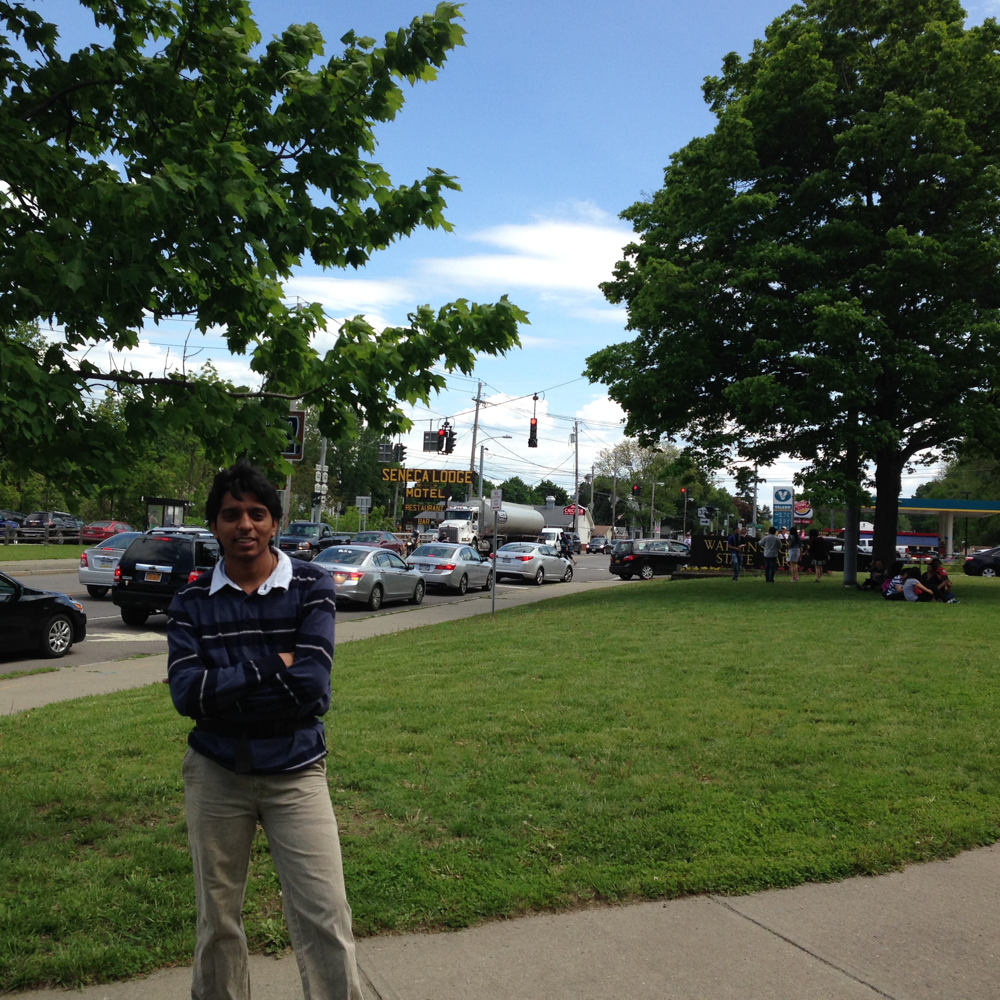
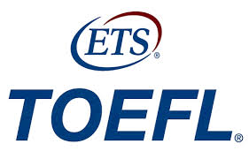
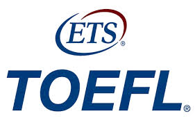

Author
Rishanth
My name is Rishanth kanakadri Chavali,I live in the United States
Educational Status
Masters in Computer Science
I'm doing my masters in University of maryland Baltimore county.
Online consultants for Abroad Studies
 

Providing good guidance for Gre and also assist students in the process of applying to various universites.
United States Of America
The American Dream is a national ethos of the United States, a set of ideals in which freedom includes the opportunity for prosperity and success, and an upward social mobility achieved through hard work. In the definition of the American Dream by James Truslow Adams in 1931, "life should be better and richer and fuller for everyone, with opportunity for each according to ability or achievement" regardless of social class or circumstances of birth.[1] The idea of the American Dream is rooted in the United States Declaration of Independence which proclaims that "all men are created equal" and that they are "endowed by their Creator with certain inalienable Rights" including "Life, Liberty and the pursuit of Happiness."[2] The meaning of the "American Dream" has changed over the course of history, and includes both personal components (such as home ownership and upward mobility) and a global vision. Historically the Dream originated in the mystique regarding frontier life. As the Royal Governor of Virginia noted in 1774, the Americans "for ever imagine the Lands further off are still better than those upon which they are already settled". He added that, "if they attained Paradise, they would move on if they heard of a better place farther west."[3] The ethos today implies an opportunity for Americans to achieve prosperity through hard work. According to The Dream, this includes the opportunity for one's children to grow up and receive a good education and career without artificial barriers. It is the opportunity to make individual choices without the prior restrictions that limited people according to their class, caste, religion, race, or ethnicity. Immigrants to the United States sponsored ethnic newspapers in their own language; the editors typically promoted the American Dream.[4]
Masters in United States
The US is home to some of the most prestigious universities in the world. It has an internationally renowned education system, and offers a huge variety of English-language courses and speciality degrees. It is well known for excellent research in a diverse, international environment. The US is the most popular country for international students, with over 800,000 international students enrolled in American universities between 2010-2011. Although its university system is probably best known for it’s academic heavyweights including Harvard, Stanford and MIT, the US offers a huge variety of higher education institutions all over the country. There are over 1,700 public and 2,500 private Universities, Colleges, Community Colleges and Institutes across the country. There are several different types of higher education institutions in the States. Universities offer undergraduate (Bachelor’s), graduate (Master’s) and post-graduate (Doctoral) studies (Note: this classification is different from European universities, as ‘graduate’ refers to someone with a degree, and ‘post-graduate’ refers to someone studying at Master’s or Doctoral level). Colleges are standalone institutions, where it is usually not possible to study beyond undergraduate level, although ‘college’ can also be used to refer to a particular part of a larger university, dealing with one area of study (e.g. the Arts). Community Colleges offer 2-year associate degrees (e.g. for trade or technical qualifications) that are the lowest academic degrees in the US, but allow the student to progress to a university to continue their studies. Institutes are comparable to Technical Universities in Europe and primarily offer studies with a strong research focus. Undergraduate courses in the USA tend to be quite broad in subject matter, wheras Master’s courses focus on a particular theme of study. Most Master’s degrees in America are taught programmes, although you will usually have to write a thesis on a particular subject of personal research. Most undergraduate degrees in the States are 4 years long, and most Master’s degrees are 2 year Tuition fees Tuition fees in the States tend to be higher than in Europe. Average tuition fees for international students are around $20,000 per year in public universities, and $28,000 at private universities, with some charging more than $40,000 a year. Living costs vary drastically according to the location and type of accommodation available. There are many scholarships available to international students, including merit-based scholarships for academically outstanding students, need-based financial aid for students from disadvantaged backgrounds and sports scholarships for exceptional sportspeople. Many scholarships have very early application deadlinesand there is often stiff competition, so it is vital to apply in plenty of time. Accommodation As an undergraduate, you will usually live on campus in university residences for the first two years of your course. The rooms are often shared between several students and contain basic furniture. Facilities in the dorms often include common rooms, a study lounge, a basic kitchen area and a laundry service. There is normally a meal plan in place, meaning that you have at least one catered meal per day, from a selection of different menus. One benefit of living in university accommodation is that all your utility bills are included in the cost. Most graduates will need to find private accommodation, as it is not usually provided on campus. There are often university posting boards to help you find this. The cost varies greatly depending on the area and type of housing. All your food will be made independently and bills will cost extra on top of the cost of rent. In some areas, there is the possibility of staying with a host family. This allows you to absorb the culture of the area you are staying in and experience the lifestyle of the locals.
Standard Tests to do Masters in the US
The Graduate Record Examinations (GRE) is a standardised test that is an admissions requirement for most graduate schools in the United States.[7] Created and administered by Educational Testing Service (ETS) in 1949,[8] the exam aims to measure verbal reasoning, quantitative reasoning, analytical writing, and critical thinking skills that have been acquired over a long period of time and that are not related to any specific field of study. The GRE General Test is offered as a computer-based exam administered at Prometric testing centers. In the graduate school admissions process, the level of emphasis that is placed upon GRE scores varies widely between schools and between departments within schools. The importance of a GRE score can range from being a mere admission formality to an important selection factor. The GRE was significantly overhauled in August 2011, resulting in an exam that is not adaptive on a question-by-question basis, but rather by section, so that the performance on the first verbal and math sections determine the difficulty of the second sections presented. Overall, the test retained the sections and many of the question types from its predecessor, but the scoring scale was changed to a 130 to 170 scale (from a 200 to 800 scale). A minimum score of 260/340 is awarded on attempting the exam.[9] The cost to take the test is US$ 195,[5] although ETS will reduce the fee under certain circumstances.[6] They also promote financial aid to those GRE applicants who prove economic hardship.[10] ETS does not release scores that are older than 5 years, although graduate program policies on the acceptance of scores older than 5 years will vary
Gre has got two different variations
- Subject-based
- Computer-based
Test of English as a Foreign Language or TOEFL /ˈtoʊfəl/ toh-fəl, is a standardised test of English language proficiency for non-native English language speakers wishing to enroll in U.S. universities. The test is accepted by many English-speaking academic and professional institutions. TOEFL is one of the two major English-language tests in the world, the other being the IELTS. TOEFL is a trademark of ETS (Educational Testing Service), a private non-profit organisation, which designs and administers the tests. The scores are valid for two years; then they are no longer reported.[5]
Internet Based
Since its introduction in late 2005, the TOEFL Internet-based Test (iBT) format has progr essively replaced the computer-based tests (CBT) and paper-based tests (PBT), although paper-based testing is still used in select areas. The TOEFL iBT test has been introduced in phases, with the United States, Canada, France, Germany, and Italy in 2005 and the rest of the world in 2006, with test centers added regularly. The CBT was discontinued in September 2006 and these scores are no longer valid. Initially, the demand for test seats was higher than availability, and candidates had to wait for months. It is now possible to take the test within one to four weeks in most countries.[8] The four-hour test consists of four sections, each measuring one of the basic language skills (while some tasks require integrating multiple skills), and all tasks focus on language used in an academic, higher-education environment. Note-taking is allowed during the TOEFL iBT test. The test cannot be taken more than once every 12 days.[9]
Reading
The Reading section consists of questions on 4–6 passages, each approximately 700 words in length. The passages are on academic topics; they are the kind of material that might be found in an undergraduate university textbook. Passages require understanding of rhetorical functions such as cause-effect, compare-contrast and argumentation. Students answer questions about main ideas, details, inferences, essential information, sentence insertion, vocabulary, rhetorical purpose and overall ideas. New types of questions in the TOEFL iBT test require filling out tables or completing summaries. Prior knowledge of the subject under discussion is not necessary to come to the correct answer.
Listening
The Listening section consists of questions on six passages, each 3–5 minutes in length. These passages include two student conversations and four academic lectures or discussions. The conversations involve a student and either a professor or a campus service provider. The lectures are a self-contained portion of an academic lecture, which may involve student participation and does not assume specialized background knowledge in the subject area. Each conversation and lecture passage is heard only once. Test-takers may take notes while they listen and they may refer to their notes when they answer the questions. Each conversation is associated with five questions and each lecture with six. The questions are meant to measure the ability to understand main ideas, important details, implications, relationships between ideas, organization of information, speaker purpose and speaker attitude.
Speaking
The Speaking section consists of six tasks: two independent and four integrated. In the two independent tasks, test-takers answer opinion questions on familiar topics. They are evaluated on their ability to speak spontaneously and convey their ideas clearly and coherently. In two of the integrated tasks, test-takers read a short passage, listen to an academic course lecture or a conversation about campus life and answer a question by combining appropriate information from the text and the talk . In the two remaining integrated tasks, test-takers listen to an academic course lecture or a conversation about campus life and then respond to a question about what they heard. In the integrate d tasks, test-takers are evaluated on their ability to appropriately synthesize and effectively convey information from the reading and listening material. Test-takers may take notes as they read and listen and may use their notes to help prepare their responses. Test-takers are given a short preparation time before they have to begin speaking. The responses are digitally recorded, sent to ETS’s Online Scoring Network (OSN), and evaluated by three to six raters.
Writing
The Writing section measures a test taker's ability to write in an academic setting and consists of two tasks: one integrated and one independent. In the integrated task, test-takers read a passage on an academic topic and then listen to a speaker discuss it. The test-taker then writes a summary about the important points in the listening passage and explains how these relate to the key points of the reading passage. In the independent task, the test-taker must write an essay that states their opinion or choice, and then explain it, rather than simply listing personal preferences or choices. Responses are sent to the ETS OSN and evaluated by at least 3 different raters.[10]
Consultants
"Applying through educational agencies and consultancies!!"
"Should I apply independently or through an agent or consultancy?"
Applying is not rocket science-you can do it yourself
It is much better if you submit your application independently. Below you can find a few reasons why: Sending your application through an agent or consultancy will not give you any advantage in the student selection process. The Finnish higher education institutions choose their students solely on the basis of the admission requirements, and no agency or consultancy can "secure" or "guarantee" you a study place. In other words, the agency or consultancy has no say whatsoever in the student selection procedures. Information provided by this kind of agencies and consultancies may be unreliable, misleading, or even completely untrue and fraudulent. So if you let an agency or consultancy submit an application on your behalf, you are taking a big risk. You will not be fully in charge of your application yourself. For example, all the important communication from the Finnish higher education institutons' Admissions Offices might not reach you at all, but only goes to the agency or consultancy. The worst scenario is that the fraudulent agent or consultancy will blackmail "extra fees" from you during or even after the actual application process. That's why you should only use your own personal contact details in the application process and fill out all the required application forms yourself - if this is for some reason not possible for you, then please contact the Finnish university/UAS you are interested in applying to and ask how to use a legal repesentative. Why should you pay for something that you can easily get for free? The Finnish higher education admission services are always free of charge. You do not need to pay any application fees, and you can always turn to the Finnish institutions' Admissions Offices for free advice relating to the application procedures, entry requirements etc. Even though there is currently no application fee when applying to Finnish higher education, during the official application procedure you should still prepare to cover the following: postage charge of documents to Finland, (possible) entrance examination fee, insurance charge and visa/student residence permit application fee. Instead of paying some agent or consultancy for something you can do for free yourself, you might wish to save your money for these official and necessary costs. If you apply via an agency or consultancy, you are not giving a good general impression of yourself as a prospective student. Think about it this way: if you let someone else handle your application, it implies that you'd rather not invest any time or effort into the application process (which is supposed to be an important step in your student career) - does this make you seem like an independently thinking and active student candidate? What should you do then? In short, we recommend that you always carry out the whole application process independently, without any third party between you as the applicant and the Finnish university/UAS you are applying to. First and foremost, you should always check all the admission-related details on the admissions pages of the Finnish university / polytechnic (UAS) you are interested in. You can find the institutions' admissions pages listed in the 'Where to study?' section of this website. If you need to ask about some particular detail of your application, the institutions' Admissions Offices are the best place to ask. They do not charge any fees for their services.